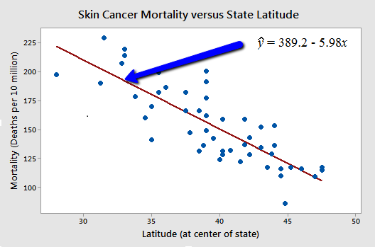
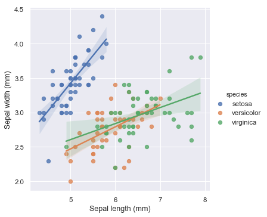
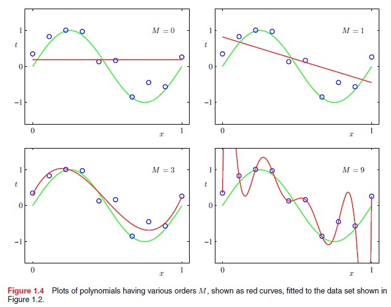
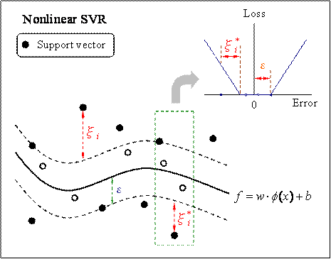

Regression
Regression is the type of Supervised Learning in which labelled data used, and this data is used to make predictions in a continuous form.
The output of the input is always ongoing, and the graph is linear. Regression is a form of predictive modelling technique which investigates the relationship
between a dependent variable[Outputs] and independent variable[Inputs]. This technique used for forecasting the weather, time series modelling, process optimisation.
Ex:- One of the examples of the regression technique is House Price Prediction, where the price of the house will predict from the inputs such as No of rooms,
Locality, Ease of transport, Age of house, Area of a home.
Types of Classification Algorithms:
There are many Regression algorithms are present in machine learning, which will use for different regression applications. Some of the main regression algorithms are as follows
Simple Linear Regression:

In simple linear regression, we predict scores on one variable from the ratings on a second variable.
The variable we are forecasting is called the criterion variable and referred to as Y. The variable we are basing our predictions on is called the predictor variable and denoted to as X.
Multiple Linear Regression:

Multiple linear regression is one of the algorithms of regression technique, and it is the most common form of linear regression analysis.
As a predictive analysis, the multiple linear regression is used to explain the relationship between one dependent variable with two or more than two independent variables.
The independent variables can be continuous or categorical.
Polynomial Regression:

Polynomial regression is another form of regression in which the maximum power of the independent variable is more than 1. In this regression technique,
the best fit line is not a straight line instead it is in the form of a curve.
Support Vector Regression:

Support Vector Regression can be applied not only to regression problems, but it also used in the case of classification.
It contains all the features that characterise maximum margin algorithm. Linear learning machine mapping leans a non-linear function into high dimensional kernel-induced feature space.
The system capacity was controlled by parameters that do not depend on the dimensionality of feature space.